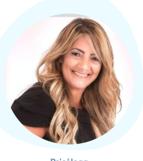
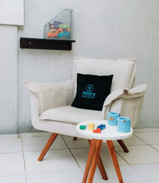
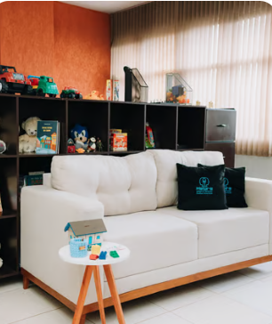
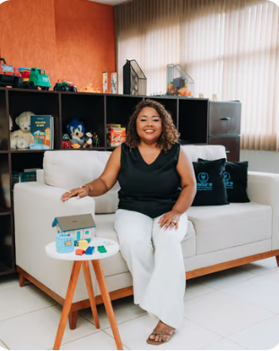

Cuidado humanizado e individualizado.
Cuidando de você em cada etapa da sua jornada.
Missão
Promover saúde emocional e qualidade de vida por meio de atendimento humanizado.
Visão
Ser referência em cuidado multidisciplinar, impactando vidas através de práticas éticas.
Propósito
Ajudar pessoas a se priorizarem, fortalecendo o equilíbrio e bem-estar emocional.
Nossos Profissionais
Silviane
Psicóloga
CRP a confirmar
• Atendimento Clínico
• Psicologia Humanizada
Carla Mariane
Psicóloga
CRP 09/15302
• Psicoterapia Fenomenológica
• Manejo de Estresse
Goreth Marques
Neuropsicopedagoga
CBO 2394-40
• Intervenção em TEA/TDAH
• Neurodesenvolvimento
Isadora Costa
Psicóloga
CRP 09/17414
• Terapia Infantil e Hebiatria
• Orientação de Pais
Tamyres
Nutricionista
Esportiva e Comportamental
• Reeducação Alimentar e Emagrecimento
• Compulsão e Seletividade Alimentar
• Bioimpedância | Atendimento Online e Presencial
Jordana S. Marques
Psicóloga
CRP 09/19293
• Psicoterapia Adultos
• Luto e Autoestima

Lusdalva Lemes
Psicóloga
CRP 09/21096
• Psicologia da Saúde
• Pacientes Crônicos
Marcia
Psicóloga
CRP a confirmar
• Atendimento Clínico
• Saúde Mental
Marcos
Psicólogo
CRP a confirmar
• Atendimento Clínico
• Saúde Mental
Marilda Amâncio
Psicóloga Clínica
CRP 09/011745
• Ansiedade e Autoestima
• Dependência Emocional
Patric Vasconcelos
Neuropsicólogo
CRP 09/015388
• Avaliação Neuropsicológica
• Diagnóstico TDAH e Autismo
Tammy Avelino
Psicóloga/Neuro
CRP 21/01800
• Avaliação Neuropsicológica
• Investigação TEA e TDAH
Vanda
Psicóloga
CRP a confirmar
• Atendimento Clínico
• Saúde Mental
Nosso Espaço



Plantão Psicológico
Precisando de apoio emocional?
Agora a Priorizar-se Espaço de Psicologia conta com o Plantão Psicológico, um atendimento pensado para acolher você nos momentos em que mais precisa de escuta, orientação e suporte emocional imediato.Agendamento rápido e prático pelo nosso site Atendimento online e presencial Não espere a situação se agravar. Cuide da sua saúde mental hoje mesmo. Agende seu Plantão Psicológico 💙 A psicoterapia é um espaço seguro, acolhedor e sigiloso para compreender emoções, desenvolver habilidades emocionais, fortalecer a autoestima, melhorar relacionamentos e enfrentar desafios da vida com mais equilíbrio e bem-estar. Priorizar Espaço de Psicologia Cuidando de você em cada etapa da sua jornada.
Solicite seu Plantão
Preencha abaixo para agendar seu atendimento exclusivo do Plantão Psicológico.